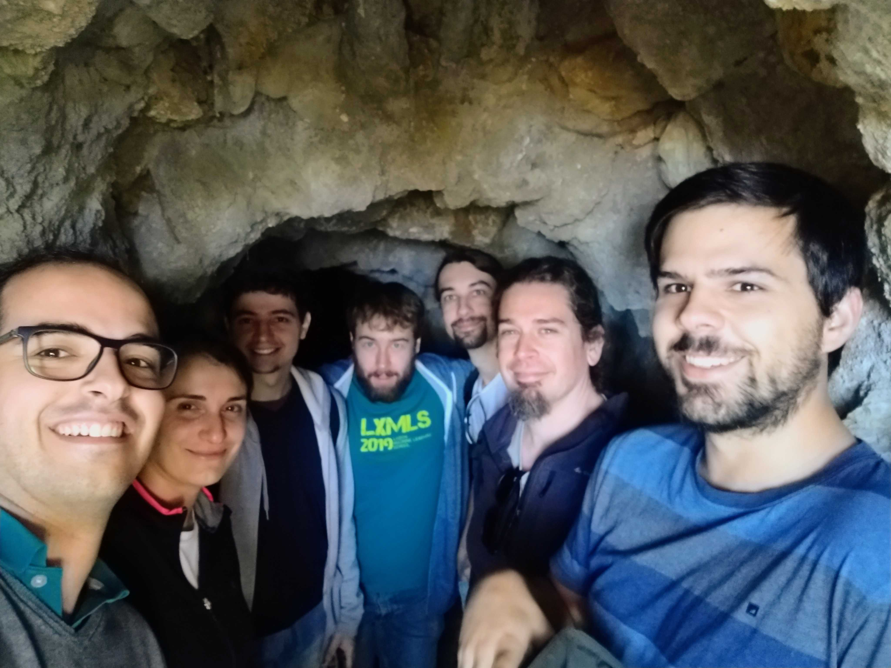

2018
Early days of SARDINE Lab
Structure AwaRe moDelIng for Natural LanguagE — a research group focused on Natural Language Processing, Deep Learning, Structured Prediction, and Sparse Modeling.
We are based at Instituto de Telecomunicações and Instituto Superior Técnico in the sunny Lisbon ☀️, Portugal 🇵🇹.
A sardine (sardina pilchardus, "sardinha" in Portuguese) is a fish commonly found in the Northeast Atlantic and Mediterranean. Sardines are a much appreciated delicacy in Portugal, most prominently at city summer festivals such as the Santo António festival in Lisbon.
Loading recent publications...
Explore our work in Theory & Foundations, Evaluation & Metrics, Uncertainty Quantification, Fairness & Bias, and many more streams!
View All PublicationsLoading team members...

Loading world map...
Dots indicate the hometown or country of origin of current and former members.
We're always excited to hear from curious minds who love language, learning, and structure. If you're into NLP, deep learning, structured prediction, or sparse modeling, come swim with us!
Come swim with us! Research flows better in a shoal 💦